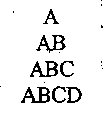

QUESTION
CT501
2074 Chaitra R
1. What are the advantages of object oriented programming over procedural programming language? Explain the features of object oriented programming. Write a simple program that illustrates the object oriented concept.[2+3+3]
2. Why do we need friend function? Explain how any member function of a class can be friend of other class with a suitable example.[2+6]
3. Explain the features of C++.What is namespace? Explain how memory is allocated and deleted dynamically for normal variable and for array in C++ with example program. [2+1+5]
4. Explain why default arguments are used with functions. How can a function with default argument be implemented with function overloading? Explain with example.[3+5]
5. Define operator overloading. Write operator functions as member function of a class to overload arithmetic operator +, logical operator '<='and stream operator '<<' to operate on the objects of user defined type time (hr, min, sec).[1+7]
6. What is Ambiguity and function Overriding? How they can be resolved? Explain each with a suitable example.[4+4]
7. What is pure virtual function and abstract class? With suitable example explain run time polymorphism.[3+5]
8. Discuss about stream class hierarchy. How a file can be open in C++. Explain with suitable example and syntax. Write a program to write the Information of 10 employee in a file. And also display their details in console.[2+2+4]
9. Explain why do we need template. Explain the function template overloading with suitable example.[3+5]
10. Explain about all Exception Handling constructs. With suitable example explain multiple exceptions handling in C++.[3+5]
QUESTION
CT501
2074 Ashwin B
1. What are the advantages of object oriented programming over procedural programming? Describe the characteristics of OOP.[4+6]
2. Explain how the use of default argument supports the function overloading with suitable example. Define namespace with its significance.[5+5]
3. Explain the relation between constant object and constant function with example. When do we use static data member and static function in a class? Exemplify.[5+5]
4. How do you convert user-defined data type to a basic data type? Write a program to overload the relational operators to compare the length (in meter and centimeter) of two objects.[4+6]
5. How the function over-riding differ from function overloading? Explain. Write a program to show the order of constructor invocation in multilevel inheritance.[5+5]
6. Explain abstract class with example. Explain how dynamic cast and typeid operators are used to achieve RTTI.[5+5]
7. What are different ios functions used in stream I/O?How they are different from manipulators? Write a program to store and retrieve the information of patient (PatientJD, name, address, age and type)in hospital management system.[3+2+5]
8. How do you use class template with multiple template type? How the exception is re-thrown during exception handling?[5+5]
QUESTION
CT501
2073 Shrawan BN
1. Explain the characteristics of OOP. Write a program to create class "time" with data members hours, minute and second. Then add two "time" objects by taking object as argument and also returning object as argument.[4+6]
2. Why don't you use an object to call the Static Member Function, explain with example? Why do you need to use a reference in the argument to the copy constructor? Write a program to calculate the Perimeter of Triangle using Default and Parameterized constructors. [4+3+3]
3. When inline function may not work? What do you understand by Default Arguments? Write syntax of Default Arguments. Write a program to display N number of characters by using default arguments for both parameters. Assume that the function takes two arguments one character to be printed and other number of characters to be printed. [2+2+2+4]
4. Explain the syntax of operator overloading. Create a class named City that will have two member variables CityName (chart[20]) and DistFromKtm (float). Add member functions to set and retrieve the CityName and DistFromKtm separately. Add operator overloading to find the distance between the cities (just find the difference of DistFromKtm) and sum of distance of those cities form Kathmandu. In the main function, initialise three city objects. Set the first and second city to be Pokhara and Dhangadi. Display the sum of DistFromKtm of pokhara and Dhangadi and distance between pokhara and Dhangadi. [3+7]
5. What do you mean by function overriding and how can we access every overridden function from the derived class object? Explain with example. Write a program to show the execution order of constructor and destructor in multilevel inheritance. Show your program outputs. [5+5]
6. What are the different ios class functions and flags that are used for formatted I/O operation? Write a program to read and write the information of 10 students in a file. Also modify the student information according to the given roll number. [3+7]
7. What do you mean by Class Template and Function Template? Write down the syntax of Class Template and Function Template. Write a program to read your Date of Birth and display it. Your program should throw multiple exception for day, month and other values not in range using exception class and each exception is handled by separate handler. [2+2+6]
8. Explain different manipulator available in C++. Create class student to store Name, Age and CRN of students. Write a program to write records of N numbers of students into the file. And your program should search complete information of students from file according to CRN entered by user and display it. [4+6]
QUESTION
CT501
2072 Chaitra R
1. Explain main characteristics of Object Oriented Programming. Write a program to find the transpose of given Matrix using the concept of Object Oriented Programming. [5+5]
2. Define constructor. Why constructor is needed for a class? Explain about different types of constructor with a suitable program. [1 +2+7]
3. Write down the significance of reference variable with suitable example. Define default argument. Write a program to show the relation between default argument and function overloading. [4+2+4]
4. Why do we need operator overloading? What are the non-over loadable operators in C++? Write a program that will convert object from a class Rectangle to object of a class Polar using Casting Operator. [2+2+6]
5. Explain the need of virtual base class with suitable example. Create a derived class manager from two base classes person and employee. Assume suitable data members in each class and display the information. [5+5]
6. Explain about stream class hierarchy by highlighting the different ios flags and their usage. Write a program to make billing system of a department store. Your program should store and retrieve data to/from files. Use manipulators to display the record in proper formats. [3+7]
7. Why do you need Virtual Destructor? Explain with example. Write a program having Polygon as an abstract class with Length and Height as its data member. Create derived class Rectangle and Triangle. Make Area () as pure virtual function and redefined it in derived class to calculate respective area. [4+6]
8. Define function template and class template with respective syntax. Write a program to find the square root of given number. Check the validity of input number and raise the exception as per requirement. [5+5]
QUESTION
CT501
2072 Kartik BN
1. What is data abstraction? Compare it with encapsulation in C++. With suitable example, explain the concept of class in C++. [2+2+6]
2. What is the advantage of C++ over C? With suitable example explain dynamic memory allocation for object and object array. [4+6]
3. What is a default argument? What are the advantages and disadvantages of using inline function? Write a program to calculate and display the cube of integer, float and double number using function overloading (passing single argument to function). [4+3+3]
4. Write down syntax of operator overloading for various cases. Develop a program using a class to with 3x3 matrix as a data member. Overload the * operators so as multiply two > matrices.[3+7]
5. .What is difference between overloading and overriding? With suitable example explain hybrid inheritance.[4+6]
6. Discuss about stream class hierarchy. Write a program for transaction processing that write and read object randomly to and from a random access file so that user can add, update, delete and display the account information (accountnumber, lastname, firstname, totalbalance). [3+7]
7. Explain the reason for member function over-riding when using virtual function. Explain RTTI using dynamic cast and typeid operators with suitable example. [5+5]
8. Explain class template with suitable example. How dp you handle multiple exceptions in C++? Explain with example. " [5+5]
QUESTION
CT501
2070 Ashad BN
1. Write down the limitations of procedural programming. Compare procedural and object oriented programming. Write program to find prime number in procedural and object oriented ways. [2+2+6]
2. What do you understand by friend functions and classes? Explain with example. Write a program to add members of objects of two different classes.
[4+6]
3. What do you mean by namespace? Explain how namespace can be used. Write a program that uses pass by reference to change meter to centimeter using pass by reference along with the namespace. [2+2+6]
4. Explain the binary and unary operator overloading along with their syntax and example. Write a program to add two matrices by overloading the + operator.
[4+6]
5. Explain the constructor and destructor invocation order in single and multiple inheritance. Also show how a parameterized base class constructor is called when derived class object are created. Write a program to create classes to represent student, teaching staffs and nonteaching staffs from the base class person. Use proper members in the classes to make your program meaningful. [4+6]
6. What do you mean by manipulators? Explain different manipulators available in C++. Write a program that stores information of a students in a file and display the file’s content in descending order according to their marks obtained. [1+3+6]
7. What are virtual functions and pure virtual functions? Explain abstract class and its use. Write a program having student as an abstract class and create derived class such as Engineering, Science and Medical. Show the use of virtual functions in this program. [2+2+6]
8. What do you understand by function template? Write down the syntax and use of function template. Write a program that will find the sum and average of elements in an array using function templates. [2+2+6]
QUESTION
CT501
2070 Chaitra R
1. What are the benefits of object oriented programming over procedure oriented programming? Describe the features of object oriented programming. What is the task of const keyboard? [4+4+2]
2. List the feature of C++. What are constructors, write their use and explain using an example. [4+6]
3. What is dynamic memory allocation? Write a C++ program to join two strings using dynamic constructor concept. [3+7]
4. What is the disadvantage of using operator overloading in C++? Write a program to define a Class Distance with necessary data members and functions. Then overload the relational operators to compare the two objects of Distance class. [2+8]
5. What is a protected access specifier? Write a program with three classes students, test and result by using multilevel inheritance. Assume necessary data members and functions yourself and program with input information, input data and calculate marks total and display result. [3+7]
6. List the features that are used in formatting the output. Explain each with example. [10]
7. Why do we need virtual function? Explain with suitable example. What is pure virtual function? What is the task of reinterpret cast operator? [6+2+2]
8. Explain the importance of function template with suitable example. How default arguments can be used in class template? What are the tasks of try, catch and throw block? [4+3+3]
QUESTION
CT501
2069 Chaitra R
1. What are the characteristics of OOP? How does the OOP d iffer from POP? Using object oriented technique, write a program to create a class vector that reads integer number. Perform vector addition by passing object as 3+2+51
argument and returns the object as result. A vector is a class with array as member.
2. What is the significance of using inline function? Describe with suitable example. What do you mean by default argument? How can you relate default argument with function overloading? Describe with suitable 14+7+41
example.
3. Define constructor and destructor. Write down different types of constructors with syntax. Create a class mdistance to store the values in meter and centimeter and class edistance to store values in.feet and inches. Perform addition of object of mdistance and object of edistance by using friend function. I 2+2+61
4. Why do we need operator overloading? How can you overload operators using member function and non member function? Write a program to overload relational operators (==, !=, >, <, >=, <=) to compare complex numbers. 12+3+51
5. How do different types of derivation affect the members of class? Write down the types of inheritance. What kind of problem is encountered in multipath inheritance? Write down its solution with suitable example. [2+2+2 +41
6. Write down the different techniques for formatting I/O stream with example. Explain the different errors encountered during file operation. [5+5 ]
7. Explain the need of virtual function with suitable example. What do you mean by run -time type information (RTT1)? How dynamic cast and typeid operators are used to achieve RTT1? 15+2+3
8. Define class template and function template with respective syntax. What are the different exception handling techniques in C++? Explain with appropriate example. [5+2+31
QUESTION
CT501
2068 Baisakh R
1. Compare C and C++. Write down different features of C++ with example for each. [5+5]
2. What do you understand by the static data member and member functions? Explain their use in the program. Write a program that uses static member functions and static data member. [2+2+6]
3. What do you understand by default arguments? Replace.the function with default argument with function overloading. Write a program to find the area of triangle (when three Sides are given) and area of rectangle using function overloading and default argument. [2+2+6]
4. What are the overloadable operators in C++? Write down the syntax for operator overloading in different cases. Write a program to compare the magnitude of complex numbers by overloading <,> and = operators. [2+2+6]
5. Explain different types of access specifiers used in inheritance. Explain the case of ambiguity in inheritance. Write a program that shows ambiguity in multiple inheritance. [2+2+6]
6. What do you mean by stream? Explain different stream class for file input/output. Write a program to display the output in pyramid from as follows: [2+2+6]
7. What do you mean by polymorphic class? What are different RTTI mechanisms in C++?
Write a program that shows both RTTI mechanisms. [2+2+6]
8. What do you mean by templates? Write down the syntax for function template and class templates. Write a program with a class template to represent array and add member functions to find maximum, minimum and sort the generic array. [2+2+6]
QUESTION
CT501
2068 Chaitra R
1. What is encapsulation? What are its advantages? How can encapsulation be enforced in C++? Write a program to create a class LandMeasure that reads Ropani, Ana, Paisa and Dam as data members. Write a function to pass two objects of type Land Measure and return their sum. (16 Ana = 1 Ropani, 4 Paisa = 1 Ana, 4 Dam = 1 Paisa) [1+1+2+6]
2. What is function overloading? Use new and delect operators to store n numbers dynamically and find their average using casting operator. What are the things we should remember while using default argument. Explain with an example. . [2+5H]
3. What do you mean by friend function and friend class? Do friends violate encapsulation? Write a program that can store Department ID and Department name with constructor. Also write destructor in the same class and show that objects are destroyed in reverse order of creation with suitable message. [2+3+5]
4. List the operators which cannot be overloaded. Why does the overloading of binary operator with member function requires only one argument? Create a class having an array as member. Overload index operator ([ ]) to input and display the elements in the array. [2+2+6]
5. How do you access overridden members of the base class from a member function in the derived class? What is the problem faced when using multipath inheritance and how is it solved? Explain with an example the order of constructor and destructor invocation during multiple inheritance. [2+3+51
6. What are the primary trade offs between static and dynamic binding? What is pure virtual function? Write a function template for the function power( ) which has two parameters base and exp and returns baseexp. The type-of base is the parameter to the template and exp is int. If the exp is negative, then it must be converted to its positive equivalent. For example 23 and 2-3 must both return 8. [2+2+6]
7. What is a file stream? Write a class student with roll, name, address, marks as member variables. Use a member function to write records of students in a binary file and another member function to read records from file. Write a program to search a specific record of student using roll number as key from user input. [2+8]
8. What are the advantages of Exception Handling^over Conventional Error Handling mechanism? Explain the constructs for Exception Handling in C++ with an example. Write a meaningful program illustrating the use of both Exception with argument and Exception Specification for function. [3+3+4]